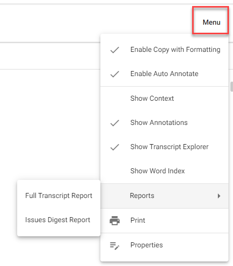
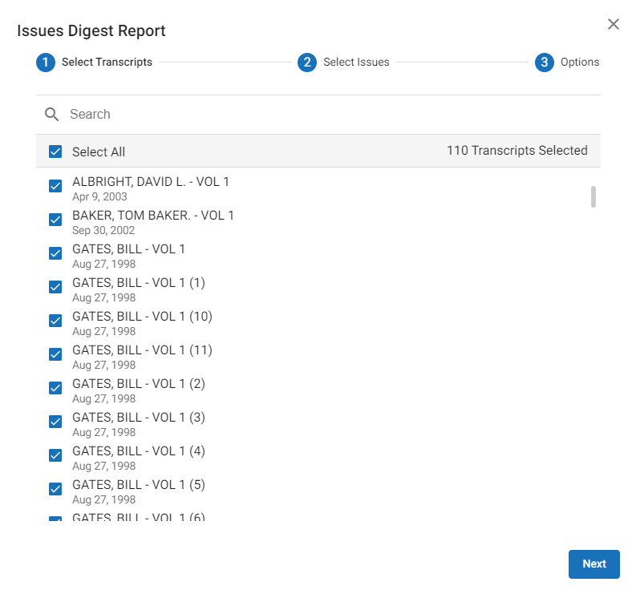
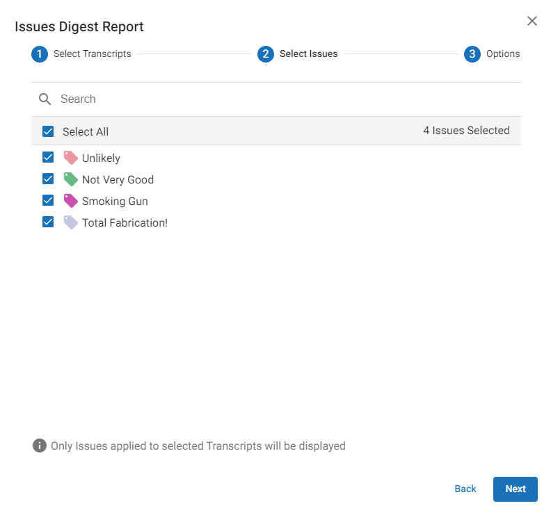
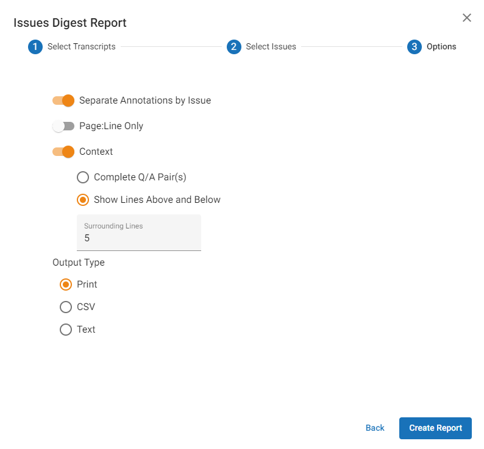
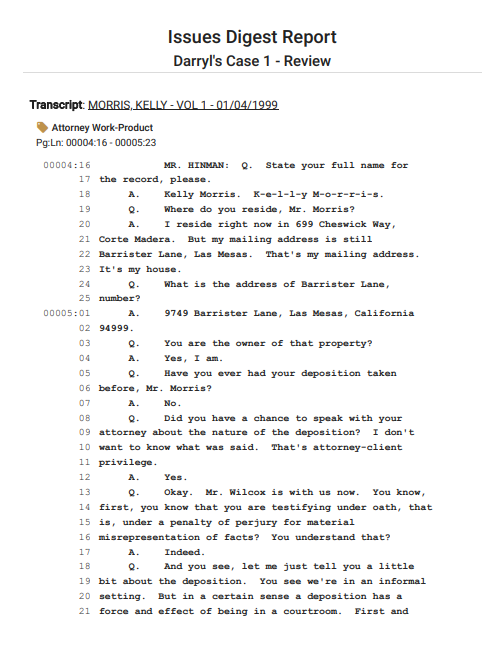
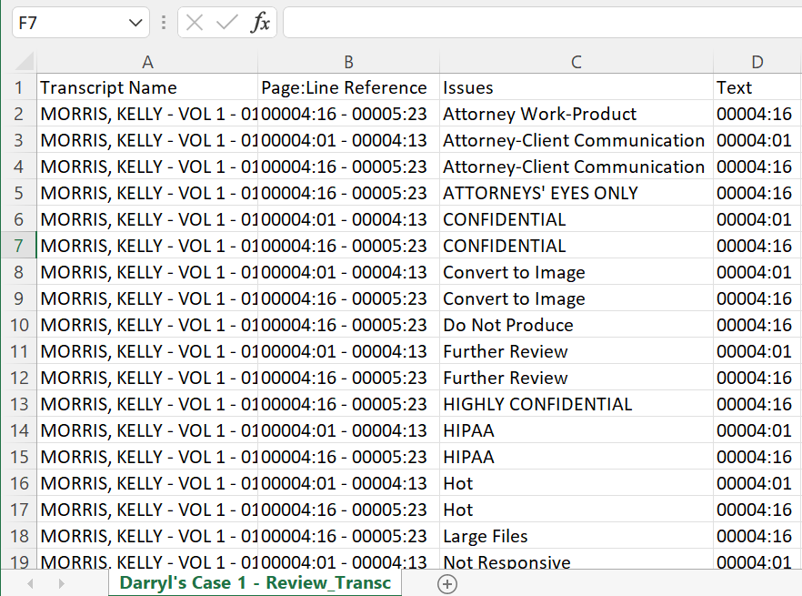
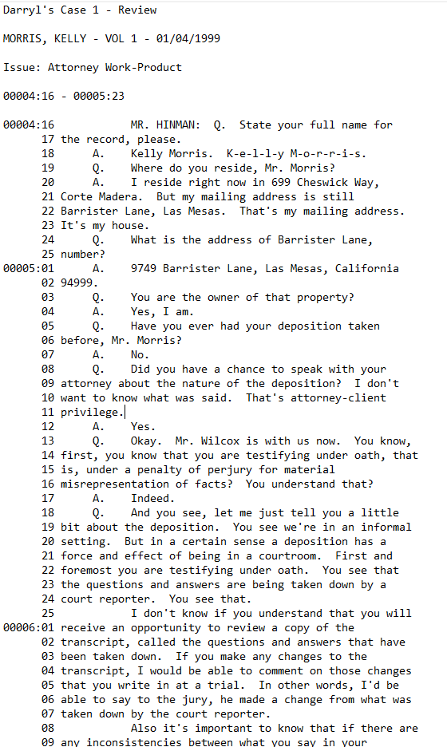
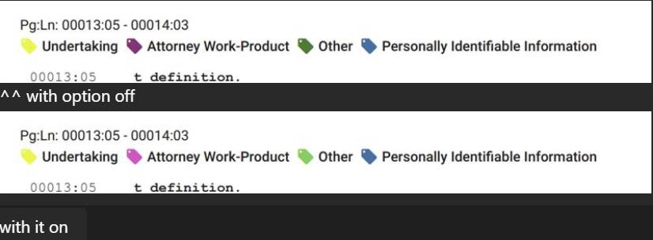
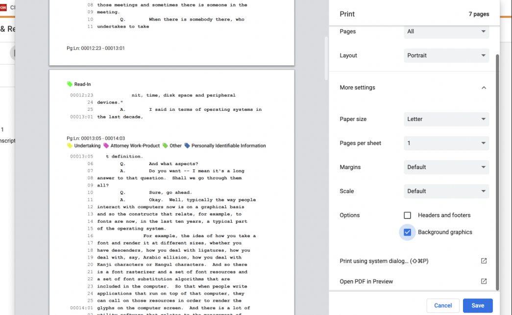

The Issues Digest Report is a summarized report of the sections that contain annotated issues within a single transcript or within multiple transcripts applied to a case. The report allows you to quickly review only the elements of the transcript(s) that contain issues.
Create the Issues Digest Report
-
Click the Review & Transcripts module and select a case. Click
 . The Visual Search dashboard is displayed.
. The Visual Search dashboard is displayed. -
Click the Transcripts icon on the left panel.
-
Click Menu on the far right corner. Select Reports and click Issues Digest Report.

The Issues Digest Report dialog box opens and the Select Transcripts screen appears. Select the Select All check box to report on all transcripts or select only the check boxes of the desired transcripts for this report. Click Next.

-
The Select Issues screen appears. Select the Select All check box or select only the check boxes of the desired issue tags you want to display in the report. Click Next.

-
The Options screen appears.

Turn on the following options as required:Option
Description
Separate Annotations by Issue
Annotations are grouped by the particular issues selected in the Select Issues screen.
Page:Line Only
The issues are shown only listed by their Page:Line references. If this option is not sufficient, you can select the Context option instead.

Note: You cannot select Page:Line Only and Context at the same time - they are mutually exclusive.
Context
You can choose to report issues as separated by one of the following:
-
Complete Q/A Pair(s), in which each issue question is paired with its corresponding answer. If the answer is annotated, the corresponding question is included, and vice versa.
-
Show Lines Above and Below, which places lines (the number of which you determine) between the annotated area. The upper limit to the number of lines is generally one page (25-27 lines).
Output Type
You can select one of three output types:
Print, CSV, or Text. -
-
After you complete your selections, click Create Report. Depending on the output you selected, the resulting report displays similarly to that shown in the following examples:
Print (can be saved as PDF)
CSV (can be saved as CSV or XLS)

Text (TXT)

Note: When generating a CSV or TXT output, the file will save automatically to your browser’s preferred download location, or will prompt you to select a location to save the file to. This is determined by the browser and the preferences that are set up.
Color Discrepancies in Printed Issues Digest Reports
When generating Issues Digest Reports in Print mode, you might come across a scenario in which certain printed/PDFed reports’ issue tag colors are slightly darker than those displayed in the viewer.
In the following example, note that only the Attorney Work Product and Other issues are affected.

This is corrected by selecting the check box for Background graphics in the print dialog box settings. In doing so, the colors are automatically rendered to display in the print/PDF as they do in the viewer.
